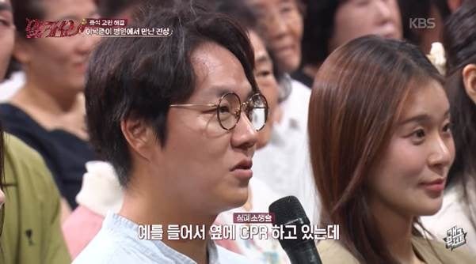
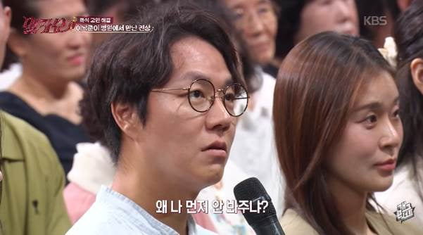
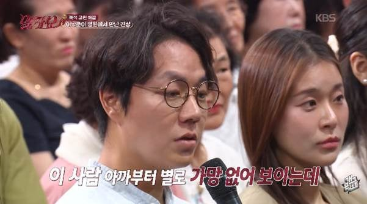
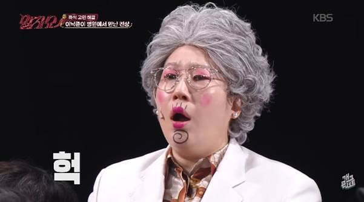
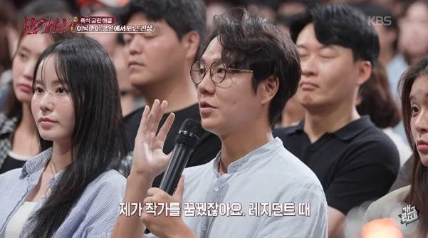
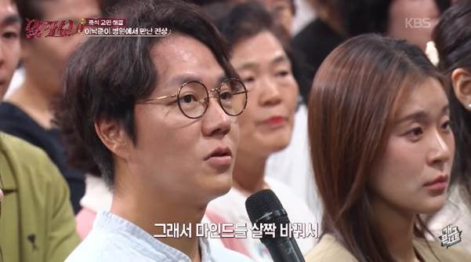
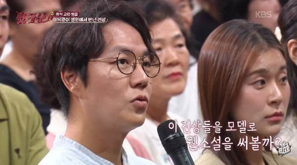
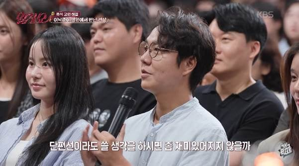

진짜 진상 미쳤다
서비스 직 진짜 극한 직업임








진짜 진상 미쳤다
서비스 직 진짜 극한 직업임
댓글
수집 당시 댓글 36개
스타벅스헬조선점 · 15 시간 전
그래서 팁이 뭔데
스타벅스헬조선점 · 15 시간 전
대할 때 상대하는 팁이 아니라 마인드셋을 잡는 팁이라는 뜻(=소설소재로생각하기)인가???
HUoAK · 15 시간 전
'와 내가 이런 개진상을 실제로 보네. 나중에 존나 썰 풀어야겠다.'라는 마음으로 넘기라는 팁
스타벅스헬조선점 · 15 시간 전
진상에게 한마디 해주는 팁을 원했는데 ㅋㅋ
크리스폴 · 14 시간 전
자기 마인드 컨트롤 하는 팁
피크닉살구맛을살려내라 · 12 시간 전
진상 썰로 개드립 갈 수 있겠는데 생각하기
천고뉴비 · 7 시간 전
싱글벙글
븽신대댓글은무시 · 6 시간 전
이씨발련 뒤졌다 ㅋㅋㅋ 넌 씨발련아 내가 웹소설에서 아주 개씨발련으로 만들거야 ㅋㅋㅋ 딱대 이썅년아 ㅋㅋ 이 생각을 좀 고풍스럽게 하신다고 보면 됨.
쥐드립넷 · 15 시간 전
사이코패스 아니냐 ㅋㅋ 어차피 사회에 별 쓸모도 없어 보이는데 굳이 치료 받으셔야겠어요? 마렵네
리나인버스 · 15 시간 전
의사는 만날일이 거의없지
만웨 · 15 시간 전
레지던트때라 하자나 레지던트도 의사여 CPR하고있다는거 보면 코드블루 떠서 의료진들 다 달라붙어 있는 건데 충분히 가능성있음
이모저덕연이딸인데요 · 14 시간 전
보통 의사보다는 간호사가 진상 상대 많이 한다는 의미임? 의사가 썰 푸는거에 의사가 만날 일이 거의 없다고 댓글 단 의미를 잘 모르겠네
대전이쥬 · 13 시간 전
응급실이면 다르지
리나인버스 · 8 시간 전
응급실로 쳐도 간호사, 원무, 이송원 이런 사람들이 진상을 오지게 만남
群靈術師 · 15 시간 전
사람 새끼가 아니네 ㄷㄷㄷ 저런 건 겪어보지 않으면 상상하기도 어렵겠다
채권팔이소년 · 15 시간 전
꿀팁 : 저런 미친놈도 있군. 작품으로 써야겠다.
만웨 · 15 시간 전
아내가 중환자실 간호사인데, 중환자실에 면회 인원 무시하고 무턱대고 밀고 들어오는 사람도 많고 온갖 인간군상은 다 보는 것 같다그럼
탈모요정 · 15 시간 전
그러고보니 간호사인데 인스타툰그리는사람도 있지않았나
Redmso · 14 시간 전
와 이런놈도 있다는 걸 놀라기만 할게 아니라 소설로 쓰면 되겠네
18G주사맛 · 14 시간 전
나도 응급실에서 근무할때 cpr하던 중 애기 서류때는 엄마가 왔는데 cpr 중이라 기다리셔야한다고 안내하니까 자기 애기 서류가 더 응급이라고 소리지르더라
아이스홍차라떼 · 14 시간 전
열난다고 봐달라는 얘기는 들어봤는데 서류... 충격이네
BigJay · 9 시간 전
그냥 하이킥을 처갈겨야함 시발년이. CPR이 뭔지 모르나??? 별 지랄같은년이
qtemfkd · 8 시간 전
서류떼러 ER온다고? 커튼치고 CPR 우르르 붙어서 5~6명 포지션 맡아서 미친듯이 올라타고 하는데 저런 아지매 대응한다고??? ER 아무나 못들어와. KTAS desk에서 걸러서 보호자도 1인만 방명록 쓰고 필요시에만 들어옴.
건들면6년 · 12 분 전
옛날에는 ktas 없었음
두둠칫둠ㅅ · 6 시간 전
애기엄마가 씨피알이 필요해보이는데
싸이버거를 · 14 시간 전
이런 씨발 당신도 CPR 필요하게 해줘?
증산역5번출구 · 13 시간 전
병원에서 인간의 밑바닥을 보는거 같더라.. 그래도 나쁜 인간들보다 좋은 사람이 압도적으로 많긴 해서 다행임
견주최씨 · 12 시간 전
와 시발...
민트맛초꼬튀김 · 10 시간 전
중증 외상센터 자체가 직업특성상 현장 노가다 직종이나 몸쓰는 직종이 많고, 그러다보니 못배운 사람들이 많음... 어쩔수 없는거임
카모라네시 · 6 시간 전
아님
연골어류 · 9 시간 전
자기 자신밖에 모르는 인간들임
겜신병자 · 7 시간 전
옆에서는 생사의 기로에 선 사람 한명을 살려보겠다고 CPR 죽어라 하고 있는거 보고 있으면서도 무심한 표정으로 약간은 짜증섞인 말투로 왜 자신의 치료에는 아무런 대응이 없느냐는 푸념을 하는건데, 어쩌면 이 사람은 성장하는 동안 두뇌속의 뉴런이 서로 잘못 연결되어 저런 생각을 하고 있는게 아닐까 하는 안타까운 생각마저 듬
천고뉴비 · 7 시간 전
진상썰로 념글, 개드립은 못참쥐
카모라네시 · 6 시간 전
저런사람들이 절대 일부가 아님 그리고 오히려 저정도면 착한 환자or보호자임 얌전히 말만 하니까 경험상 진상이 90%이상에 개씹진상이 5%될듯 인간같은 인간은 아무리 잘쳐줘도 5%?
cuuub · 6 시간 전
응급실 입구에 응급 정도에 따라 순차적으로 진료한다고 존나 크게 써놔야됨. 캐나다는 사람 병원이든 동물 병원이든 응급 순서 다 써놨더라. 초록색부터 빨간색까지.
일하기싫어요 · 5 시간 전
ㄹㅇ 다양한 사람 상대하는 직종서 일하다보면 ㅈ간은 말살이 맞구나 라는 생각이 한번씩 들게됨.., 인류애 사라짐